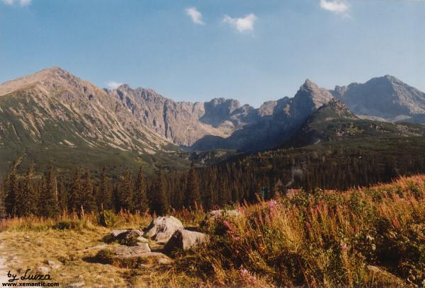
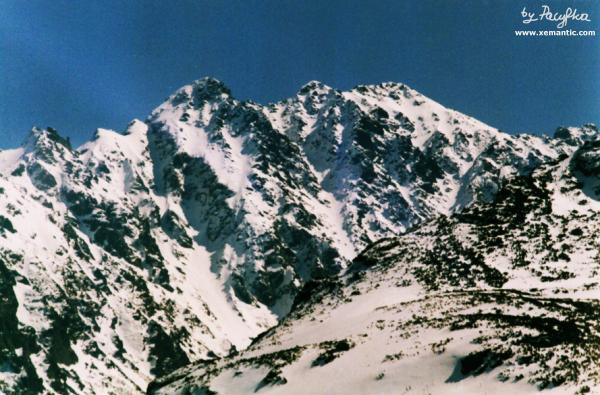
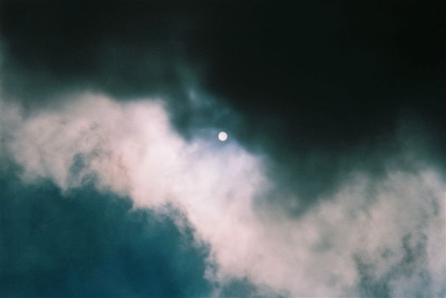
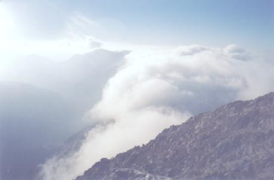

| "W kotlinie, nisko, schodzi cień
w ciemnych jeziorek głuszy...." Widok spod Beskidu fot. Pacyfka |
 |
| "marzyć na twym łonie zielonym bezkreśniej,
niż tam - na czole skalnej piramidy szczytu..." Hala Gąsienicowa, Żółta Turnia, Granaty, Kozi, Kościelec i Świnica fot. Luiza |
 |
| Granaty posępne
fot. Pacyfka |
 |
| "W kotlinie, nisko, schodzi cień
w ciemnych jeziorek głuszy...." Widok spod Beskidu fot. Pacyfka |
|
| "...okręcajmy się wstęgą naokoło księżyca...
" Niebo nad Doliną Gąsienicową fot. Bogusia |
 |
| "Ponad doliną się rozwiesza
srebrzystoturkusowa cisza nieba w słonecznych skrach." Widok ze Świnicy do Doliny Wierchcichej fot. Sivy |
 |